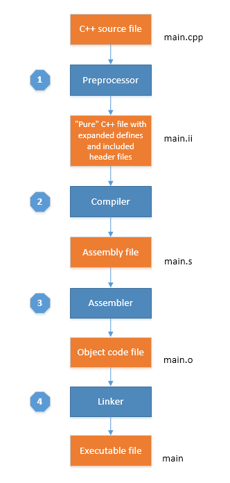

本来只是为了从底层了解下堆和栈的区别，以及heap和free-store的区别，结果便引出了从源代码编译开始，直到可执行程序如何加载到内存，以及C/C++内存布局的问题，这里做个总结，主要参考C++ Internals :: Memory Layout
本文所使用的环境：
- Ubuntu-14.04 x64 kernel 4.2.0-36-generic
- GCC version 4.8.4
需要使用的其他工具：
- c++filt – Demangle C++ and Java symbols.详情可以自行查看man手册
C++编译器通常进行以下4个步骤将源代码编译为可执行程序：
- 预处理器的预处理阶段，替换#开头的内容
- 编译器编译阶段，将预处理后的源程序处理成汇编源程序
- 汇编器的汇编阶段，将汇编源程序汇编为可重定位的目标二进制程序
- 连接器将可生定位的目标程序连接成为可执行的二进制目标程序
以下面这段代码的编译链接过程举例：
1 |
|
预处理阶段
命令：g++ -std=c++11 -E main.cpp > main.ii
-E参数可以让gcc只对源代码进行预处理，并将预处理之后的代码输出的标准输出中。默认情况下gcc会将预处理之后的代码命名为后缀.ii
该阶段预处理器会处理以#开头的命令（如#include，#define，#if等），处理之后的输出文件就完全是个纯C++源文件，不再包含预处理命令，当该处理过程将根据#if，#ifdef，#ifndef，#endif来确定是否需要时行相应的处理。其中#include命令中包含的头文件会被替换成相应的文件内容，但通常只是声明，实现部分可能依然在源文件中，但会以特殊标记标出，以便编译器可以找到相应的实现。对于#define定义的宏命令，会直接进行相应内容的替换。
由于上例中包含有头文件vector和iostream，这两个头文件中包含有大量声明和实现，所以经过预处理之后会生成一个很大的输出文件，下面以下较简单的例子举例说明：
t.cpp
1 |
|
经过预处理之后的文件为
t.ii
1 | # 1 "const_folding.cpp" |
注意上述代码有我额外定义了const的变量，发现在预编译阶段const变量并没有变化，也就是说网上很多人说的常量折叠其实并不是发生在预编译阶段，而是在编译阶段，编译器会将const定义的常量，字符常量表达式（如上面的3.1415926 * 2）替换为结果值
从输出代码中可以看出预处理器除了进行了宏替换之外，还增加一些形如：
# linenum filename flags//注意行号是指相应filename的文件中的行
的代码，根据GCC官方文档最后的flags可以包含1、2、3、4，当包含多个时，以空格隔开，具体各自的意思，文档中都有详细说明。
编译阶段
编译阶段，编译器使用预处理器的输出文件生成汇编源文件，注意只是汇编源代码，也就是此时的文件还只是文本文件。使用命令：g++ -std=c++11 -S main.ii，-S参数表示GCC只生成汇编源代码，而不进行汇编。默认情况下生成的文件后缀为.s，对于上述代码生成的汇编源码的前17行如下，当然整个文件有1586行。
main.s
1 | .file "main.cpp" |
由于编译器为了支持C++的函数重载，所以引用了name mangling机制，也就是相当于给所有函数名一个新的名字以区分不同的重载函数，可以使用GNU的c++filt工具来对原汇编源码unmangle name即可得到原名称，命令为cat main.s | c++filt > main_unmangled.s，unmangle之后的部分代码如下：
1 | .file "main.cpp" |
汇编阶段
汇编阶段使用汇编器将汇编源代码汇编为可重定位的目标程序（relocatable object program），该阶段生成的文件为二进制文件，它的字节码是机器语言指令而不是字符。命令为g++ -std=c++11 -c main.s。-c参数表示只编译而不进行链接，默认输出文件为源程序名加后缀.o。注意汇编的输入文件必须是原汇编文件，而不能是unmangle name之后的文件。可重定位的目标程序相当于是编译器与链接器之间的桥梁，正是由于该中间结果的出现，使得不同的编程语言产生的含有符号表(symbols)和重定位表relocations的目标程序可以被链接器链接到一起成为可执行的目标程序。
链接阶段
以下未明天说“可执行”的目标文件是都是指可重定位的目标文件，符号=symbols，重定位=relocations
该阶段使用链接器将目标文件链接到一个可执行文件或共享库中，该可执行文件将可以由操作系统或者加载器加载到内存中执行。命令为g++ -std=c++11 -o main main.o，如果不指定-o参数，则默认为输出文件名为a.out
该阶段的实质是链接器通过符号（symbols）和重定位（relocations）将多个可重定位的目标程序中相应的节（section）合并到一个二进制文件中。此处如何合并就要涉及到内存布局的问题，参见C++内存布局
关于symbols和relocations的详细介绍：
symbols
详情查看Wikipedia
通常情况下可重定位的目标文件中包含三种类型的symbols（其实也是ELF格式的三种类型）:
- 已经定义的”external” symbols，该符号允许被其他模块调用
- 未定义的”external” symbols，该符号引用在其他模块中已经定义的符号。
- 局部符号，在目标文件中内部使用以便方便进行重定位。
例如一个C++源码编译生成的可重定位的目标程序中，每个函数、全局变量、静态变量都会有一个symbol与之对应，这些就是已经定义的symbols。定义在不同文件中symbols就是未定义的symbols。在链接期间，链接器会给每个symbol指定一个地址，并会通过查找同名的已经定义的symbol来解决所有未定义的symbol。根据该symbol是局部或全局、已初始化或未初始化、变量还是常量，链接器会将它们放在可执行的目标程序文件中的不同节（sections）。
relocation
详情查看Wikipedia
重定位是指一个过程，该过程将为程序中不同部分指定载入地址并调整程序中的代码和数据以将其映射到指定的地址。
与重定位过程紧密相关的有重定位表（relocation tables）和一些包含额外信息的特定的节（sections），例如其中一个section就是.rela.text，该节与重定位可执行目标文件中的.text节有关。深入了解相关问题可以参见ELF文件格式。
每一个.o文件都有一个重定位表（relocation table），该表给出了每一个需要被链接器更新的符号symbol，以及该如何更新的信息。
可以通过g++ -std=c++11 -o main main.cpp一次性编译并生成可执行的目标程序，如果希望一个命令编译并链接生成可执行程序的同时保留上面四个步骤中的临时文件，可以通过添加--save-temps参数，如g++ -std=c++11 --save-temps -o main main.cpp。
以图说话：

关于可重定位的目标文件与可执行文件的实质区别，以及内存布局，section(节)与segment（段）的区别，详见实例分析C++内存布局